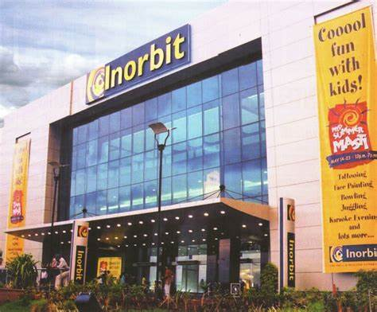

INORBIT MALL

Inorbit Mall is a subsidiary of K. Raheja Corporation which runs shopping malls in various parts of India.
The first Inorbit Mall opened in 2004, in Malad, Mumbai. This is the fourth oldest shopping mall in Mumbai, from Infiniti Mall of Andheri, R Mall of Mulund, and Crossroads of South Mumbai. Inorbit Malls launched their second property in Vashi, Navi Mumbai, in October 2008;[4] third in Cyberabad, Hyderabad in October 2009;[5][6] fourth in Vadgaon Sheri, Pune in May 2011 which was closed down in November 2016;[7] fifth in Whitefield, Bangalore on 15 September 2012 and sixth in Vadodara on 5 September 2013.
The company follows a lease-plus-revenue mode revenue model for all its properties.[9]
Inorbit Mall is a subsidiary of K. Raheja Corporation which runs shopping malls in various parts of India.
The first Inorbit Mall opened in 2004, in Malad, Mumbai. This is the fourth oldest shopping mall in Mumbai, from Infiniti Mall of Andheri, R Mall of Mulund, and Crossroads of South Mumbai. Inorbit Malls launched their second property in Vashi, Navi Mumbai, in October 2008;[4] third in Cyberabad, Hyderabad in October 2009;[5][6] fourth in Vadgaon Sheri, Pune in May 2011 which was closed down in November 2016;[7] fifth in Whitefield, Bangalore on 15 September 2012 and sixth in Vadodara on 5 September 2013.
The company follows a lease-plus-revenue mode revenue model for all its properties.[9]
How to reach:

By Air
The nearest airport is in hyderabad

By Train
The nearest railways is in hyderabad

By Road
inorbit mall; the most famous tourist destination in Hyderabad, can be used as a landmark. A bus,cab,local rickshaw can also be taken to reach the capital.